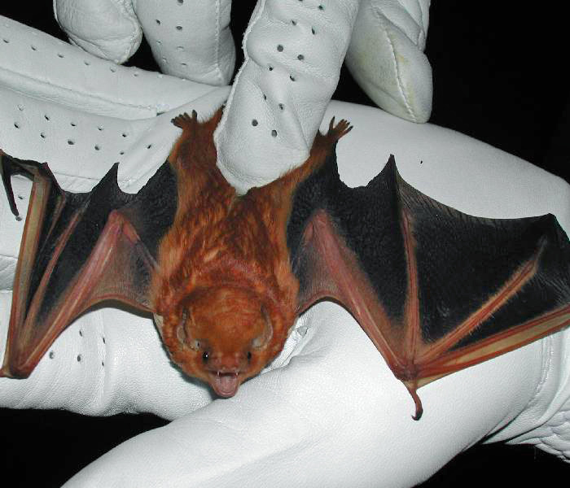

They have and orangish-red color. They mostly feed on flying insects.
Most Eastern red bats roost solitarily, sometimes sharing a tree with only a few other bats. They often migrate south in the autumn, and so the summer is the best time to study them in Illinois. We were able to sample a few duiring the summer, very cute guys.
